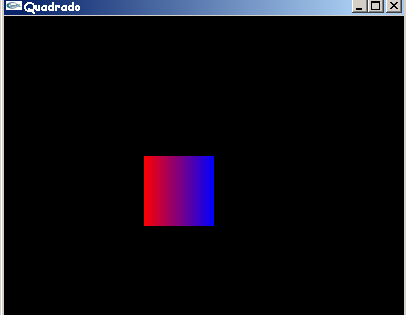

O exemplo de programa OpenGL do capítulo anterior apenas abria uma janela vazia com um fundo azul. Neste capítulo é apresentado um exemplo que mostra como fazer um desenho, mover e redimensionar a janela [Wright 2000].
#include <windows.h>
#include <gl/glut.h>
// Função callback chamada para fazer o desenho
void Desenha(void)
{
glMatrixMode(GL_MODELVIEW);
glLoadIdentity();
// Limpa a janela de visualização com a cor de fundo especificada
glClear(GL_COLOR_BUFFER_BIT);
// Especifica que a cor corrente é vermelha
// R G B
glColor3f(1.0f, 0.0f, 0.0f);
// Desenha um quadrado preenchido com a cor corrente
glBegin(GL_QUADS);
glVertex2i(100,150);
glVertex2i(100,100);
// Especifica que a cor corrente é azul
glColor3f(0.0f, 0.0f, 1.0f);
glVertex2i(150,100);
glVertex2i(150,150);
glEnd();
// Executa os comandos OpenGL
glFlush();
}
// Inicializa parâmetros de rendering
void Inicializa (void)
{
// Define a cor de fundo da janela de visualização como preta
glClearColor(0.0f, 0.0f, 0.0f, 1.0f);
}
// Função callback chamada quando o tamanho da janela é alterado
void AlteraTamanhoJanela(GLsizei w, GLsizei h)
{
// Evita a divisao por zero
if(h == 0) h = 1;
// Especifica as dimensões da Viewport
glViewport(0, 0, w, h);
// Inicializa o sistema de coordenadas
glMatrixMode(GL_PROJECTION);
glLoadIdentity();
// Estabelece a janela de seleção (left, right, bottom, top)
if (w <= h)
gluOrtho2D (0.0f, 250.0f, 0.0f, 250.0f*h/w);
else
gluOrtho2D (0.0f, 250.0f*w/h, 0.0f, 250.0f);
}
// Programa Principal
int main(void)
{
glutInitDisplayMode(GLUT_SINGLE | GLUT_RGB);
glutInitWindowSize(400,350);
glutInitWindowPosition(10,10);
glutCreateWindow("Quadrado");
glutDisplayFunc(Desenha);
glutReshapeFunc(AlteraTamanhoJanela);
Inicializa();
glutMainLoop();
}
Este programa, como mostra a figura 8.1, apenas exibe um quadrado azul e vermelho numa janela com fundo preto. As novas funções utilizadas neste exemplo são descritas a seguir.

Figura 8.1 - Saída do programa Quadrado.c
glutInitWindowSize(400,350); especifica o tamanho em pixels da janela GLUT.
glutInitWindowPosition(10,10); especifica a localização inicial da janela GLUT, que neste caso é o canto superior esquerdo da tela do computador [Woo 1999].
glutReshapeFunc(AlteraTamanhoJanela); estabelece a função "AlteraTamanhoJanela" previamente definida como a função callback de alteração do tamanho da janela. Isto é, sempre que a janela é maximizada, minimizada, etc., a função "AlteraTamanhoJanela" é executada para reinicializar o sistema de coordenadas.
glColor3f(1.0f, 0.0f, 0.0f); determina a cor que será usada para o desenho (linhas e preenchimento). A seleção da cor é feita da mesma maneira que na função glClearColor, sendo que não é necessário especificar o componente alfa, cujo valor default é 1.0 (completamente opaco).
glBegin(GL_QUADS);… glEnd(); usada para desenhar um quadrado preenchido a partir dos vértices especificados entre glBegin e glEnd. OpenGL mapeia as coordenadas dos vértices para a posição atual da janela de visualização na função callback “AlteraTamanhoJanela”.
Antes de descrever os parâmetros e comandos da função “AlteraTamanhoJanela”, é necessário revisar alguns conceitos e especificações. Em quase todos ambientes de janelas, o usuário pode alterar o tamanho e dimensões da janela em qualquer momento. Quando isto ocorre, o conteúdo da janela é redesenhado levando em conta as novas dimensões. Normalmente, o esperado é que a escala do desenho seja alterada de maneira que ele fique dentro da janela, independente do tamanho da janela de visualização ou do desenho [Foley 1990]. Assim, uma janela pequena terá o desenho completo, mas pequeno, e uma janela grande terá o desenho completo e maior.
Apesar do exemplo mostrar um quadrado 2D, o desenho é feito em um espaço de coordenadas 3D. A função glBegin(GL_QUADS);… glEnd(); desenha o quadrado no plano xy em z=0. Portanto, é necessário determinar o tamanho da viewport (janela onde será feito o desenho) e do volume de visualização (parte do universo da aplicação que será mapeada para viewport), pois estes parâmetros influenciam o espaço de coordenadas e a escala do desenhos 2D e 3D na janela.
Sempre que o tamanho da janela é alterado, a viewport e o volume de visualização devem ser redefinidos de acordo com as novas dimensões da janela. Assim, a aparência do desenho não é alterada (por exemplo, um quadrado não vira um retângulo). Como a alteração do tamanho da janela é detectada e gerenciada de maneira diferente em cada ambiente, a biblioteca GLUT fornece a função glutReshapeFunc, descrita anteriormente, que registra a função callback que a GLUT irá chamar sempre que houver esta alteração. A função passada para a glutReshapeFunc deve ter o seguinte protótipo: void AlteraTamanhoJanela(GLsizei w, GLsizei h);. O nome "AlteraTamanhoJanela" foi escolhido porque descreve o que a função faz. Os parâmetros recebidos sempre que o tamanho da janela é alterado são a sua nova largura e a sua nova altura, respectivamente. Esta informação é usada para modificar o mapeamento do sistema de coordenadas desejado para o sistema de coordenadas da tela com a ajuda de duas funções uma OpenGL, glViewport, e uma da biblioteca GLU, gluOrtho2D. Estas e outras funções chamadas na "AlteraTamanhoJanela", que definem como a viewport é especificada, são descritas a seguir.
glViewport(0, 0, w, h); recebe como parâmetro a nova largura e altura da janela. O protótipo desta função é: void glViewport(GLint x, GLint y, GLsizei width, GLsizei height);. Seus parâmetros especificam o canto inferior esquerdo da viewport (x,y) dentro da janela, e a sua largura e altura em pixels (width e height). Geralmente x e y são zero, mas é possível usar a viewport para visualizar mais de uma cena em diferentes áreas da janela. Em outras palavras, a viewport define a área dentro janela, em coordenadas de tela, que OpenGL pode usar para fazer o desenho. O volume de visualização é, então, mapeado para a nova viewport.
gluOrtho2D (0.0f, 250.0f*w/h, 0.0f, 250.0f); é usada para determinar que a projeção ortográfica (2D) será utilizada para exibir na tela a imagem 2D que está na janela de seleção definida através dos parâmetros passados para esta função. O protótipo desta função é: void gluOrtho2D(GLdouble left, GLdouble right, GLdouble bottom, GLdouble top);. No sistema de coordenadas cartesianas, os valores left e right especificam os limites mínimo e máximo no eixo X; analogamente, bottom e top especificam os limites mínimo e máximo no eixo Y.
glMatrixMode(GL_PROJECTION); e glLoadIdentity(); servem, respectivamente, para avisar a OpenGL que todas as futuras alterações, tais como operações de escala, rotação e translação, irão afetar a "câmera" (ou observador), e para inicializar o sistema de coordenadas antes da execução de qualquer operação de manipulação de matrizes. Sem este comando, cada chamada sucessiva de gluOrtho2D poderia resultar em uma corrupção do volume de visualização. Em outras palavras, a matriz de projeção é onde o volume de visualização, que neste caso é um plano, é definido; a função gluOrtho2D não estabelece realmente o volume de visualização utilizado para fazer o recorte, apenas modifica o volume existente; ela multiplica a matriz que descreve o volume de visualização corrente pela matriz que descreve o novo volume de visualização, cujas coordenadas são recebidas por parâmetro.
glMatrixMode(GL_MODELVIEW); avisa a OpenGL que todas as futuras alterações, tais como operações de escala, rotação e translação, irão afetar os modelos da cena, ou em outras palavras, o que é desenhado. A função glLoadIdentity(); chamada em seguida, faz com que a matriz corrente seja inicializada com a matriz identidade (nenhuma transformação é acumulada) [Wright 2000].
red: 0.5
green: 0.5
blue: 0.5